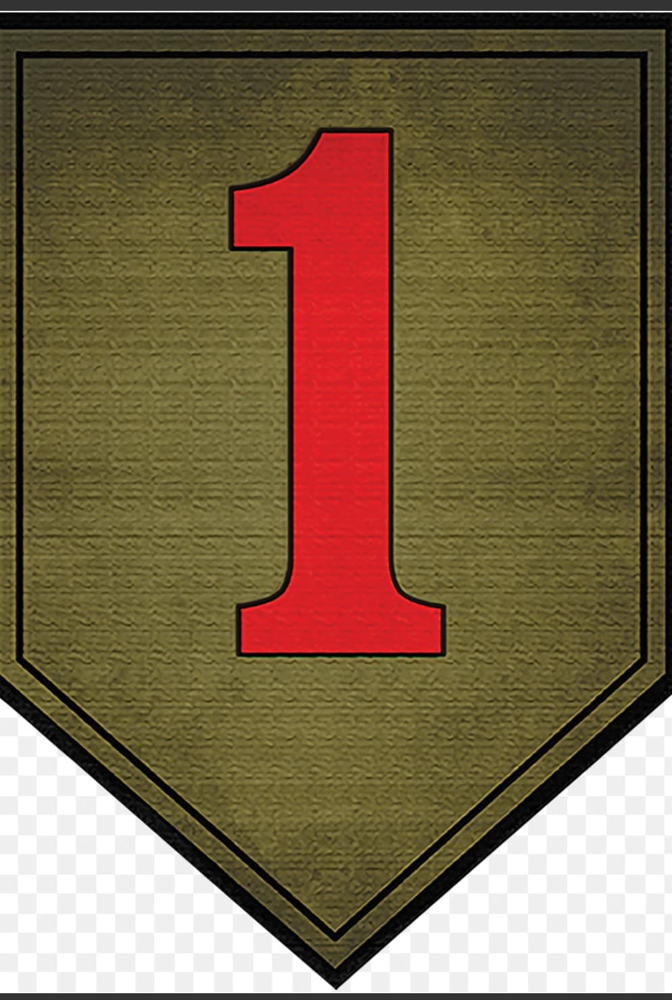
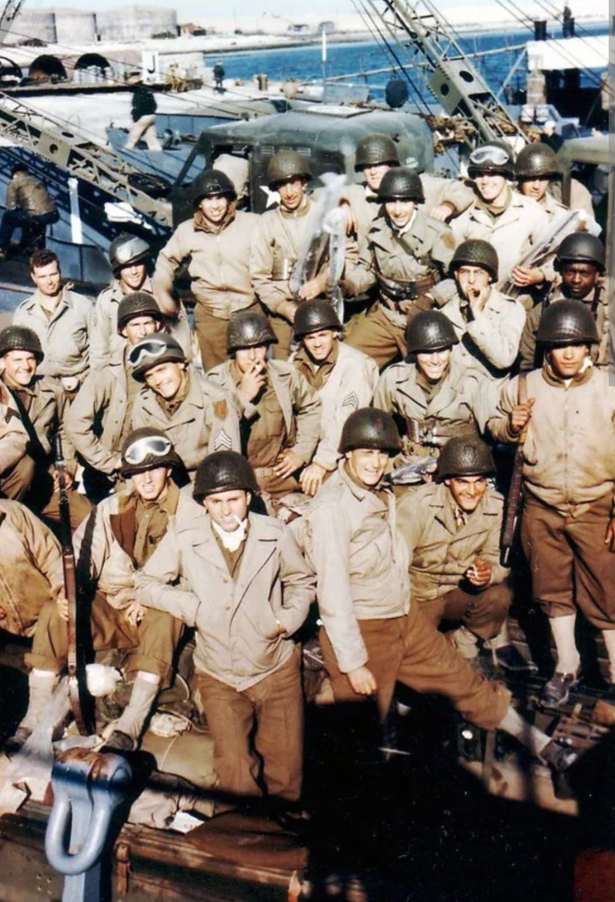
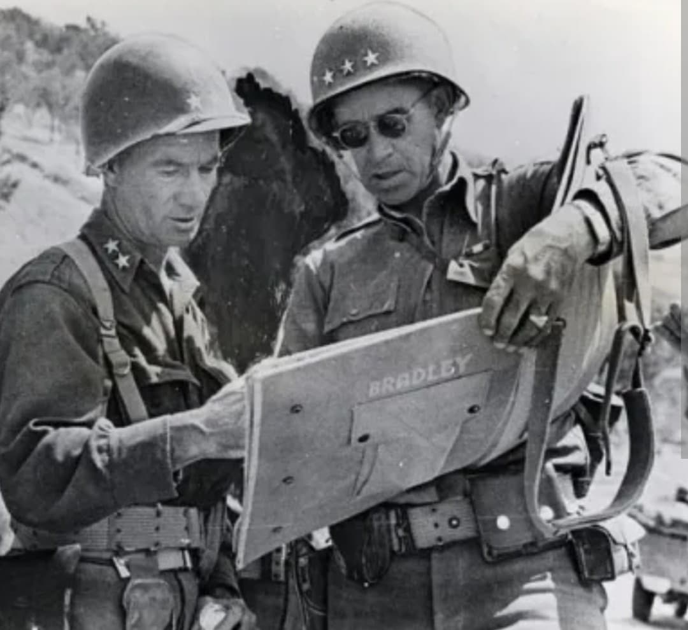

Introduction
La 1st Infantry Division de l'armée américaine, surnommée la “Big Red One” en raison du grand chiffre « 1 » rouge arboré sur son insigne d'épaule, est l'une des unités les plus célèbres et les plus décorées de l'histoire militaire des États-Unis.
Pendant la Seconde Guerre mondiale, elle s'illustre sur tous les théâtres d'opérations majeurs en Europe et en Afrique du Nord, participant à certains des combats les plus meurtriers du conflit, notamment le débarquement sur la plage d'Omaha Beach le 6 juin 1944.
Origine et insignes
Créée en 1917 durant la Première Guerre mondiale, la division est la plus ancienne unité d'infanterie d'active continue de l'US Army. Son insigne distinctif — un chiffre « 1 » rouge sur fond olive — est adopté sur le front français dès 1918.
Sa devise officielle est “No Mission Too Difficult, No Sacrifice Too Great—Duty First!” (Aucune mission n'est trop difficile, aucun sacrifice n'est trop grand — Le devoir d'abord !). Les hommes de la division sont souvent désignés sous le nom de “Fighting First”.

Premières campagnes : Afrique du Nord et Sicile (1942-1943)
La Big Red One entre au combat lors de l'Opération Torch en novembre 1942, débarquant près d'Oran en Algérie. Elle affronte les forces de l'Axe lors de la difficile campagne de Tunisie, notamment au col de Kasserine et à la bataille d'El Guettar.
En juillet 1943, elle participe à l'Opération Husky (le débarquement en Sicile). Sous le commandement du général Terry Allen, puis du général Clarence Huebner, elle prend d'assaut la ville de Gela et livre de violents combats à Troina avant d'être envoyée en Angleterre pour préparer l'invasion de la France.

Le 6 juin 1944 : Omaha Beach (Bloody Omaha)
Le 6 juin 1944 (D-Day), le 16e régiment d'infanterie de la 1st Infantry Division forme la première vague d'assaut sur le secteur Easy Red de la plage d'Omaha Beach, aux côtés de la 29th Infantry Division.
Face à une défense allemande féroce (la 352e division d'infanterie) solidement retranchée sur les falaises, les Américains subissent de très lourdes pertes dès les premières minutes. Malgré le chaos, la ténacité des hommes et le leadership des officiers de contact permet de percer la ligne de défense ennemi et d'établir une tête de pont.

Du Bocage normand à la Bataille des Ardennes
Après la percée de Normandie (Opération Cobra), la Big Red One avance rapidement à travers la France. Elle participe à la capture de la ville de Aachen (Aix-la-Chapelle) en octobre 1944, la première grande ville allemande à tomber aux mains des Alliés.
En décembre 1944, la division est prise dans l'offensive allemande des Ardennes. Elle défend avec succès le flanc nord de la percée dans la forêt de Hürtgen et le secteur stratégique d'Elenborn Ridge, empêchant la progression des Panzer-Divisions.
Bilan humain et héritage historique
Pendant ses 443 jours de combat durant la Seconde Guerre mondiale, la 1st Infantry Division a déploré plus de 20 000 pertes (tués, blessés, disparus ou capturés). Seize de ses soldats ont reçu la Medal of Honor, la plus haute distinction militaire américaine.
Aujourd'hui, la Big Red One reste un symbole d'élite au sein des forces armées des États-Unis et son rôle déterminant sur les plages de Normandie demeure gravé dans la mémoire collective.
Voir aussi
Page du Musée HOP WW2 – Section États-Unis & Logistique